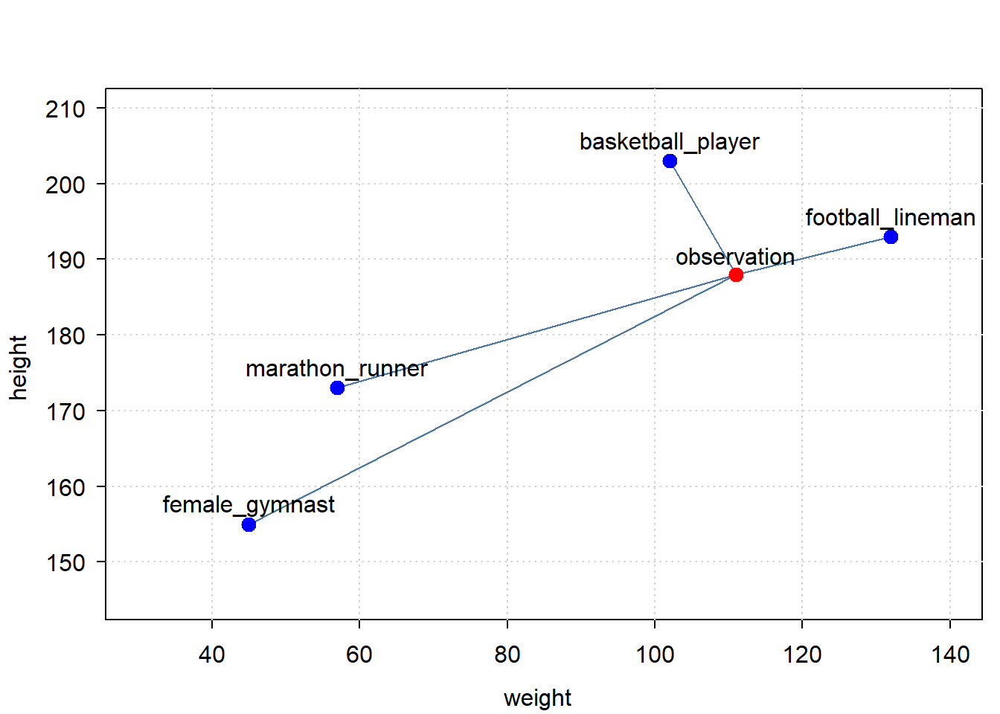
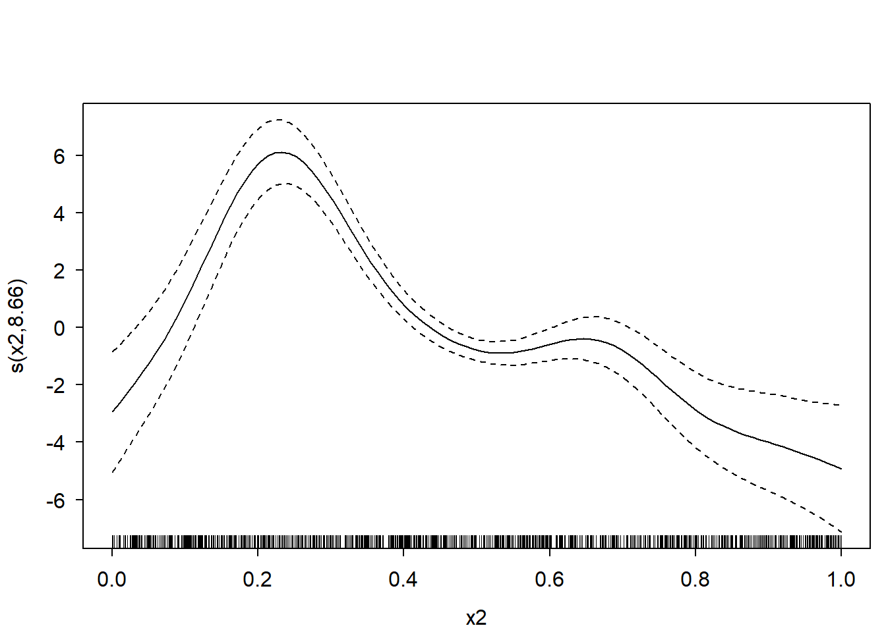
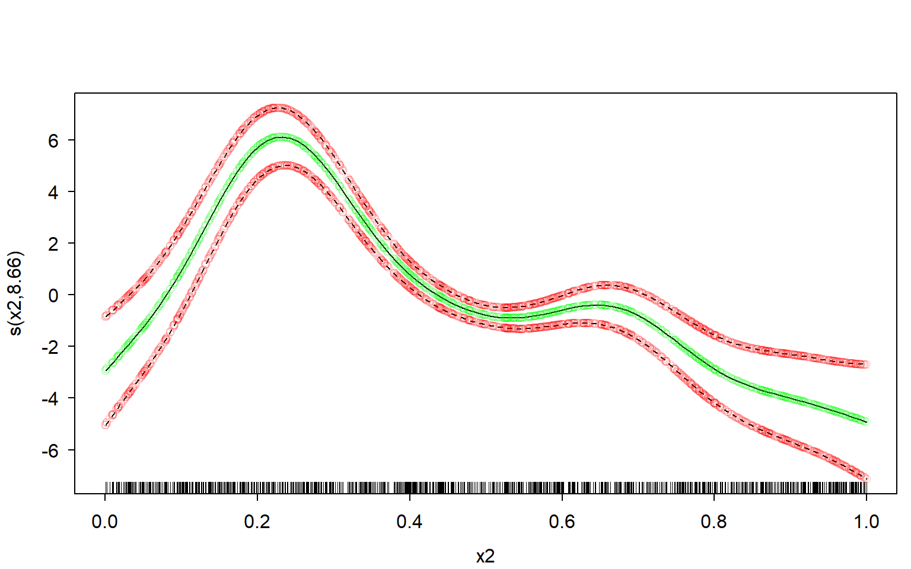
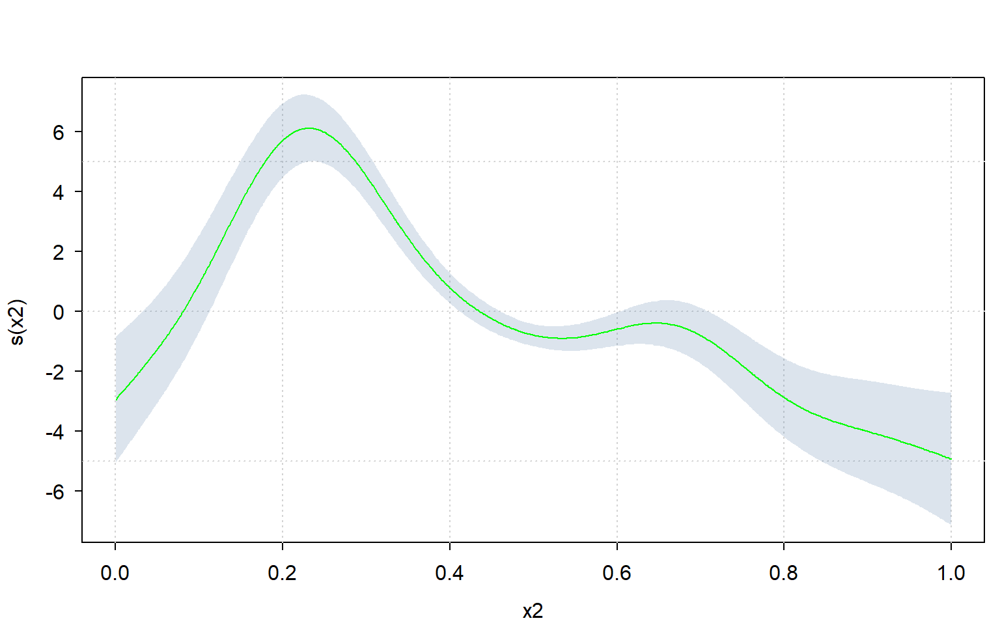
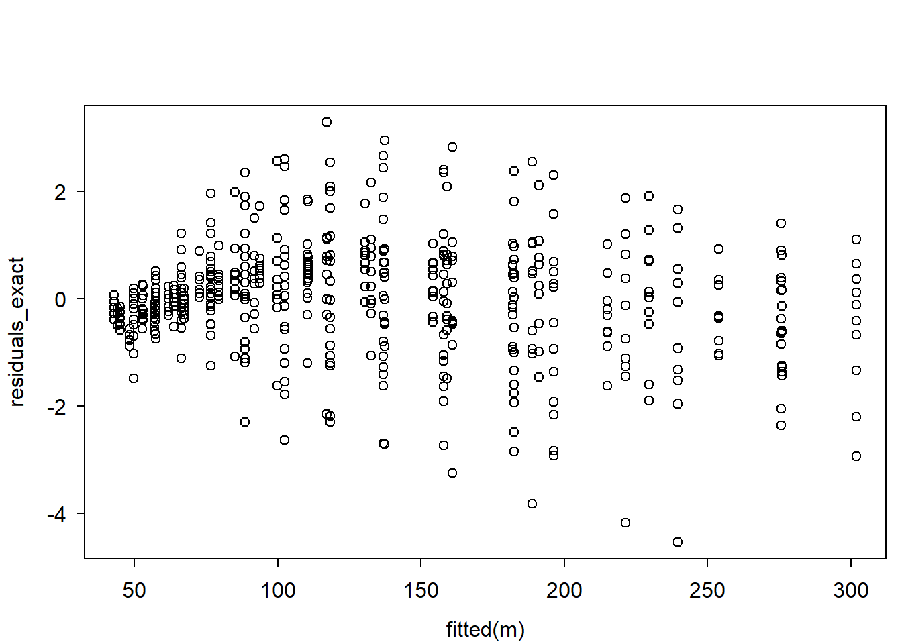
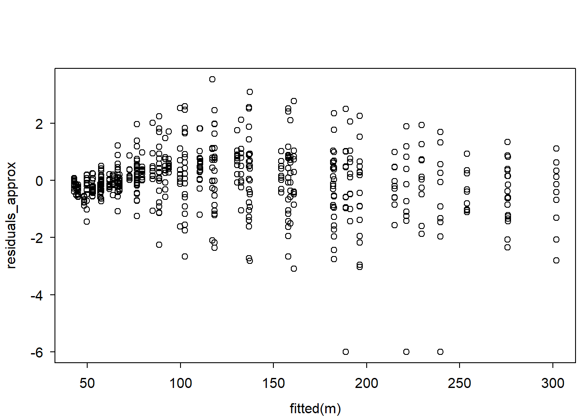
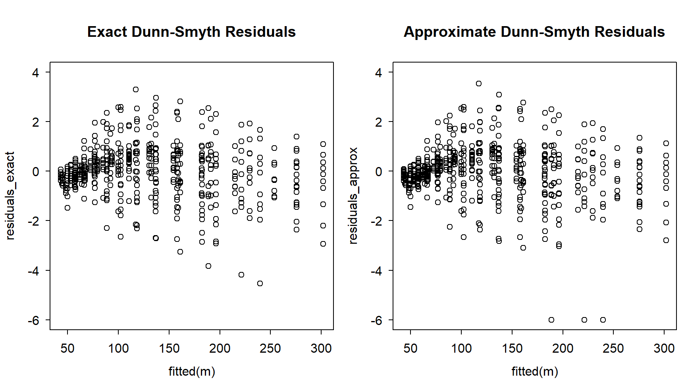

observation <- c(
weight = 111, height = 188
) |> vector2array(direction = 2L)
print(observation)
#> weight height
#> [1,] 111 188
classes <- rbind(
female_gymnast = c(weight = 45, height = 155),
marathon_runner = c(weight = 57, height = 173),
basketball_player = c(weight = 102, height = 203),
football_lineman = c(weight = 132.0, height = 193.0)
)
print(classes)
#> weight height
#> female_gymnast 45 155
#> marathon_runner 57 173
#> basketball_player 102 203
#> football_lineman 132 193Applications in Statistics
Broadcasting comes up frequent enough in real world statistical problems. This page gives a few examples of these.
1 Vector Quantization
This first example is loosely taken from NumPy’s own website.
One example of broadcasting in statistics occurs in the vector quantization (VQ) algorithm used.
Given a set of observations and a set of classification points, vector quantization (VQ) (Linde, Buzo, and Gray 1980) finds out which of the classification points is closest to each observation, thereby classifying the observations using Euclidean distances.
Below is a very simple example, with 2 dimensions: height and weight. We have one observation, an athlete, with a given height and weight. We have a set of classification points, specifying which height and weight is typical for a class of athlete. The point is to find out, based on the person’s height and weight, what class of athlete this person most probably is.
Let’s first create the data:
Let’s plot the data:
library(tinyplot)
tinytheme("clean")
tinyplot(
xmin = classes[,1], xmax = observation[1],
ymin = classes[,2], ymax = observation[2],
type = "segments",
xlim = c(30, 140), ylim = c(145, 210),
xlab = "weight",
ylab = "height"
)
tinyplot(
x = observation[1], y = observation[2], type = "points", add = TRUE,
col = "red", pch = 20, cex = 2
)
tinyplot(
x = classes[,1], y = classes[, 2], type = "points", add = TRUE,
col = "blue", pch = 20, cex = 2
)
text(
x = observation[1], y = observation[2] + 2.5, labels = "observation"
)
text(
x = classes[,1], y = classes[,2] + 2.5, labels = rownames(classes)
)
So which of the classifications is closest to our observation? Broadcasting can help get that answer.
broadcaster(classes) <- broadcaster(observation) <- TRUE
diff <- classes - observation
dist <- sqrt(rowSums(diff^22))
dist[which.min(dist)]
#> basketball_player
#> 8.649813e+12The answer is: the basketball player is the closest.
Note
When you plot vectors with ‘tinyplot’, ensure they are not broadcaster vectors, as that seems to conflict with the recycling assumptions of ‘tinyplot’
2 Spline Confidence Interval
The sd_lc() function computes the standard deviation for a linear combination of random variables. One of its notable use-cases is to compute the confidence interval (or credible interval if you’re going Bayesian) of a spline.
Packages like ‘mgcv’ provides the user to plot and analyse the smoothers with confidence from a fitted GAM.
But sometimes one may want to compute spline intervals manually, like in the following cases:
- Some packages (like the ‘INLA’ package), do not provide a clear and consistent way to compute the confidence intervals of a spline.
- One may want to use a type of spline not covered by the package you’re using (this is especially true when using a novel spline). In such cases, you’ll have to compute the spline mean and confidence/credible intervals on your own.
So one practical application of sd_lc() is computing confidence/credible intervals of splines when a package does not provide that service in a user-friendly way.
Please note that the sd_lc() functions is just a linear algebra function, not specific to any type/class of model (so this function assumes you know what you’re doing).
For a demonstration of sd_lc(), the following will be done:
- a GAM model will be fitted using the ‘mgcv’ package. The model will consist of several low-rank thin-plate (lrtp) smoothers.
- One of these lrtp splines will be plotted with credible intervals using the
plot()method provided by ‘mgcv’ itself. - The sd_lc() function will be used to re-create compute the credible intervals of the spline from step 2 and re-create the plot.
For the sake of this demonstration, I’ll forgo some crucially mandatory steps in statistical modelling - like data exploration, model diagnostics, and model interpretation.
First, let’s create some data, fit a GAM on it, and plot the spline for variable “x2”:
d <- mgcv::gamSim(7, n = 1000L, dist = "normal", scale = 2L)
#> Gu & Wahba 4 term additive model, correlated predictors
m <- mgcv::gam(y ~ s(x1) + s(x2) + s(x3), data = d)
par(mfrow = c(1,1))
plot(m, select = 2)
Now extract the required model parameters to recreate this plot:
# get names of relevant coefficients:
coeffnames <- names(coef(m))
coeffnames <- grepv("x2", coeffnames)
print(coeffnames)
#> [1] "s(x2).1" "s(x2).2" "s(x2).3" "s(x2).4" "s(x2).5" "s(x2).6" "s(x2).7"
#> [8] "s(x2).8" "s(x2).9"
# get necessary model parameters (i.e. X, b, vc)
# but only for relevant coefficients:
b <- coef(m)[coeffnames]
X <- predict(m, type = "lpmatrix")[, coeffnames, drop = FALSE]
vc <- vcov(m)[coeffnames, coeffnames, drop = FALSE]Computing the means of the spline is trivial:
means <- X %*% bComputing the (~ 95%) credible interval is a bit trickier - at least if you want to avoid unnecessary copies/memory-usage when you have a large dataset, and don’t want to use a slow for-loop.
But using the sd_lc() function it becomes relatively easy to compute it very memory-efficiently, even with a very large dataset:
st.devs <- sd_lc(X, vc) # get standard deviations efficiently
mult <- 2 # mgcv uses multiplier of 2; approx. 95% credible interval
lower <- means - mult * st.devs
upper <- means + mult * st.devsNow let’s plot the manually computed spline over the original one, and see how well our own estimate fits.
I’ll use transparent green dots for the mean, and transparent red dots for the credible interval:
# defines some colours:
green <- rgb(red = 0, green = 1, blue = 0, alpha = 0.15)
red <- rgb(red = 1, green = 0, blue = 0, alpha = 0.15)
# original plot from the 'mgcv' R-package:
par(mfrow = c(1,1))
plot(m, select = 2)
# our own re-creation plotted over it:
lc <- data.frame(
x = d$x2,
means = means,
lower = lower,
upper = upper
)
lc <- lc[order(lc$x),]
lc %$% points(x = x, y = means, col = green) # plot our means
lc %$% points(x = x, y = lower, col = red) # plot our lower bound
lc %$% points(x = x, y = upper, col = red) # plot our upper bound
Perfect fit.
Since one can very easily re-create the plot using sd_lc(), one can also use a different plotting framework altogether.
Let’s use the ‘tinyplot’ framework to compute the plot manually:
library(tinyplot)
tinytheme("clean")
lc %$% tinyplot( # plot confidence interval
x = x, ymin = lower, ymax = upper, type = "ribbon",
xlab = "x2", ylab = "s(x2)",
)
lc %$% tinyplot( # plot means over it
x = x, y = means, type = "l",
add = TRUE, col = "green"
)
3 Approximate Dunn-Smyth residuals
The ecumprod(y, sim) function (available from ‘broadcast’ version 0.1.8) takes simulated values sim, and for each row i estimates the cumulative distribution function of sim[i, ], and returns the cumulative probability for y[i]. It is statistically equivalent to ecdf(sim[i, ])(y[i]), except ecumprob() is more memory-efficient and supports a data.frame for sim.
There are several use-cases for ecumprob(). This section gives one such use-case.
An absolutely crucial part of statistical regression modelling is checking whether the model’s assumptions (like non-linearity, mean-variance relations, and so on) have been violated, using residuals. If the model assumptions have been violated, you cannot trust your statistical model.
An increasingly popular type of model residual for (mixed) GLMs/GAMs is a type referred to as “Randomized Quantile Residuals”, developed by Dunn and Smyth (Dunn and Smyth 1996) - also known as “Dunn-Smyth residuals”. Dunn-Smyth Residuals have been shown to outperform alternatives, like Deviance residuals, for model diagnostic purposes (Feng, Li, and Sadeghpour 2020; Bai et al. 2021; Pereira 2019). These residuals are also easier to compute and understand than residuals like Deviance residuals.
The Dunn-Smyth residual \(r\) for an observation \(i\) is defined as follows for continuous regression models (like the gamma or beta GLM):
\[ \displaystyle r_i = Q_\text{Norm}(\text{CDF}(y_i | \mu_i, \theta)) \] where \(Q_\text{Norm}\) is the quantile function of the standard Normal distribution, and CDF is the cumulative distribution function of the model evaluated for response value \(y_i\) with model parameters \(\mu_i, \theta\).
Note
Putting a continuous random variable in its own CDF necessarily returns a uniform distribution. Putting a uniformly distributed variable inside the quantile function of a distribution returns that same distribution. This is why Dunn-Smyth residuals work.
For models that use a discrete distribution, the definition is slightly more complex, but follows in essence the same principle as the formula given above:
\[ \displaystyle \begin{split} r_i = Q_\text{Norm}(u_i) \enspace ; \enspace u_i \sim \text{Uniform}(a_i, b_i) \\ a_i = \text{CDF}(y_i - 1 | \mu_i, \theta) \enspace ; \enspace b_i = \text{CDF}(y_i | \mu_i, \theta) \end{split} \]
The only real difference is that the discrete definition jitters between the CDF evaluated at \(y_i - 1\) and \(y_i\).
As stated, computing Dunn-Smyth residuals is fairly easy… if the CDF and it’s exact parametrization is known. If the exact parametrization of the CDF is not known, or it’s not clear how to extract the parameters from the model object, then it suddenly becomes a matter of statistical and software-engineering sleuthing.
There is an alternative to sleuthing: empirically approximating the cumulative probabilities using ecumprob().
Let’s run a Gamma GLM with log-link function on the datasets::ChickWeight. For the sake of this demonstration, I’ll forgo some crucially mandatory steps in statistical modelling - like data exploration, model diagnostics, and model interpretation.
m <- glm(weight ~ Time * Diet, family = Gamma(link = "log"),
data = ChickWeight)
m.summary <- summary(m)Although computing Dunn-Smyth residuals for a model such as the one above is relatively easy, it does require knowledge on how the Gamma distribution is parametrized in the software you’re using, and how to extract the parameters from the model object:
# get parameters from glm:
y <- m$y
mu <- fitted(m)
w <- m$prior.weights
disp <- m.summary$dispersion
# translate model parameters to Gamma distribution parameters:
shape <- 1 / disp * w
rate <- 1 / (mu * disp) * w
# compute Dunn-Smyth residuals:
residuals_exact <- pgamma(y, shape = shape, rate = rate) |> qnorm()
# plot residuals:
plot(fitted(m), residuals_exact)
Note
The Gamma distribution is parametrized by the shape and rate parameters, while a standard Gamma GLM is parametrized by the \(\mu\) (mean) and \(\theta\) (dispersion) and \(w\) (weight) parameters.
The relationship between them is as follows:
\[ \displaystyle \begin{split} \text{shape} = \theta^{-1} w \\ \text{rate} = (u \theta)^{-1} w \end{split} \]
What if the parametrization used by the software you’re using is not well documented? Or what if extracting the parameters is not easy?
An alternative is to simulate from the model, and estimate the cumulative probabilities empirically, using ecumprob(), like so:
sim <- simulate(m, 5e3) # simulate 5000 values PER observation
y <- ChickWeight$weight
residuals_approx <- ecumprob(y, sim, eps = 1e-9) |> qnorm() # empirically compute DS residuals
# plot residuals:
plot(fitted(m), residuals_approx)
Let’s compare the residual plots:
par(mfrow = c(1, 2))
ylim <- pretty(c(residuals_exact, residuals_approx)) |> range()
plot(
fitted(m), residuals_exact,
main = "Exact Dunn-Smyth Residuals",
ylim = ylim
)
plot(
fitted(m), residuals_approx,
main = "Approximate Dunn-Smyth Residuals",
ylim = ylim
)
Not exactly the same, but reasonably similar.
Some important problems on computing Dunn-Smyth residuals via simulation-based empirically approximated CDFs:
- It is faster and more memory-efficient to compute exact Dunn-Smyth residuals, rather than approximating from simulations. This is because the simulations themselves need to be produced first, which wastes time and memory.
- Cumulative probabilites based on simulations are approximations. The more simulated values, the better the approximations. But exact Dunn-Smyth residuals are virtually always better than those based on simulated values.
- The approximated cumulative probabilities are only as good as the simulated values, so make sure these simulations correctly represent your model. For a mixed model, pay special attention if random effects are re-simulates. For a weighted model, check if the simulated values take the weights into considerations. Etc.
- Just like the parametrization of a model can be poorly documented, how a model generates simulated values can also be poorly documented. There is no free lunch.
Note
Some may recognize that the ‘DHARMa’ package also computes something “like” Dunn-Smyth residuals based on simulations. As such, DHARMa also suffers from the problems pointed out above.
The following advice holds: when possible, compute exact Dunn-Smyth residuals rather than simulation-based approximations.
References
Bai, Wei, Mei Dong, Longhai Li, Cindy Feng, and Wei Xu. 2021. “Randomized Quantile Residuals for Diagnosing Zero-Inflated Generalized Linear Mixed Models with Applications to Microbiome Count Data.” BMC Bioinformatics 22 (1): 564.
Dunn, Peter K, and Gordon K Smyth. 1996. “Randomized Quantile Residuals.” Journal of Computational and Graphical Statistics 5 (3): 236–44.
Feng, Cindy, Longhai Li, and Alireza Sadeghpour. 2020. “A Comparison of Residual Diagnosis Tools for Diagnosing Regression Models for Count Data.” BMC Medical Research Methodology 20 (1): 175.
Linde, Yoseph, Andres Buzo, and Robert Gray. 1980. “An Algorithm for Vector Quantizer Design.” IEEE Transactions on Communications 28 (1): 84–95.
Pereira, Gustavo HA. 2019. “On Quantile Residuals in Beta Regression.” Communications in Statistics-Simulation and Computation 48 (1): 302–16.